The connectome of a larval Drosophila brain
Contents

The connectome of a larval Drosophila brain#
Benjamin D. Pedigo#
(he/him) NeuroData lab Johns Hopkins University - Biomedical Engineering
 bpedigo@jhu.edu
@bdpedigo (Github)
bpedigo@jhu.edu
@bdpedigo (Github)
 @bpedigod (Twitter)
@bpedigod (Twitter)
 bdpedigo.github.io
bdpedigo.github.io
These slides at:#
Many goals of connectomics involve linking connectome to other properties#

Comparative connectomics as a potential solution?#
Map connectomes from related individuals/organisms which may differ in feature \(X\):
Genome
Behavioral patterns/habits
Life experience
Developmental stage
Compare connectomes
Understand how \(X\) {affects, is affected by, is associated with} connectome structure
Connectome \(\leftrightarrow\) memory#
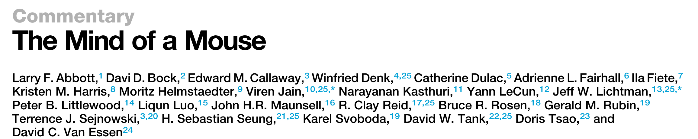
…the acquisition of wiring diagrams across multiple individuals will yield insights into how experiences shape neural connections.
Connectome \(\leftrightarrow\) disease#
The first step would be to learn what the normal wiring diagram is […] it should be feasible to do many additional connectomes […] of animal models of brain disorders
Connectome \(\leftrightarrow\) development#
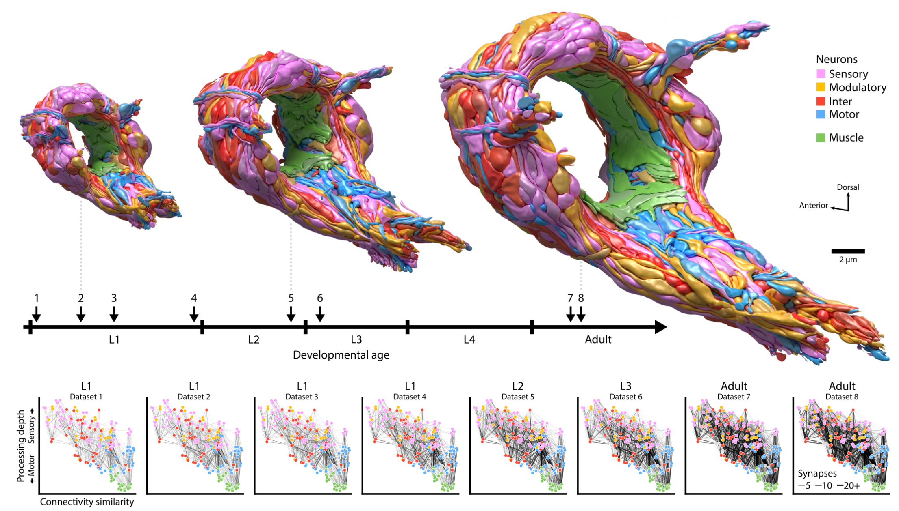
Why is comparative connectomics hard?#
Collecting the data is still a large effort…#
But how do we even compare connectomes once we have them?#
~~Data are networks~~
Data are networks with rich attributes
Data will always have noise
“Experimental noise”
“Biological noise”
Data are big (and getting bigger)
Outline#
Larval connectome dataset#
Connectome comparison via network hypothesis testing#
Pairing neurons across connectomes via graph matching#
Ongoing extensions/applications#
Larval Drosophila brain connectome#
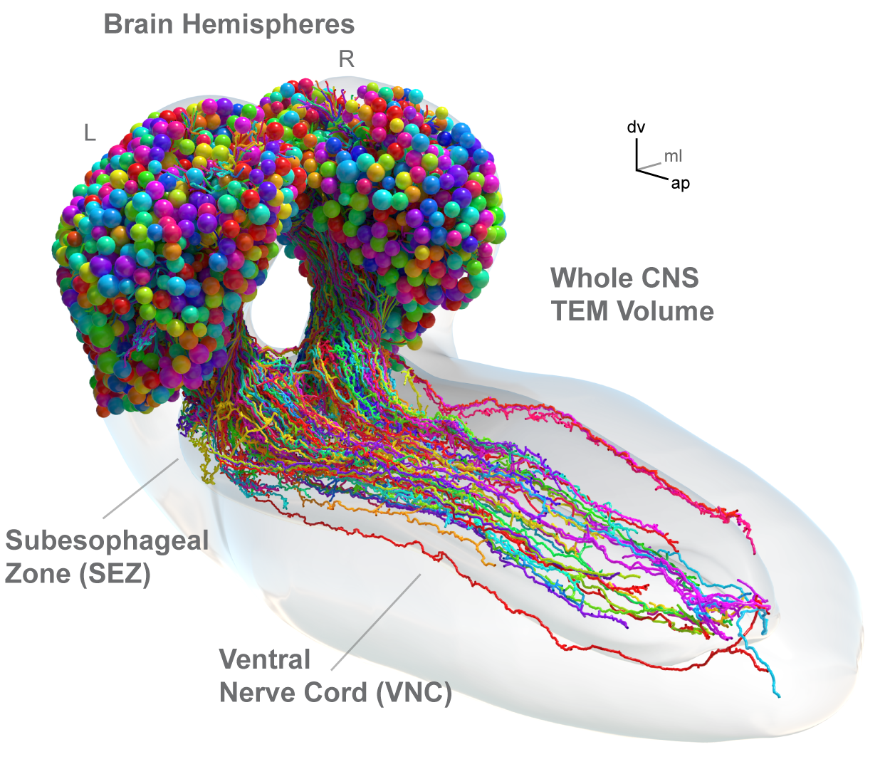 ~3k neurons, ~550K synapses Both hemispheres
Include the numbers of sites, etc.
High level (mostly anatomical) cell types#
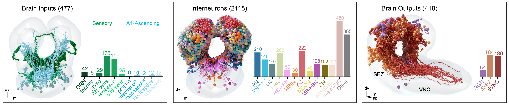
Axons/dendrites can be split#


This split induces 4 graphs (or layers)#


What are these different “channels” doing?#

Quantifying high-level “feedforward/feedback”#


what if we let them all sort independently#
maybe show S6F?
comparing sort directions ranks#
show some examples from S7B
show the edge reciprocity by type#
CLustering (blank slide)#
Spectral embedding#
very old idea
more recently, shown to be a consistent estimator of block model
Diagram of procedure#
mention embedding
cluster - when to stop
“Pseudo-cross validation”#
show curve of number of clusters
Resulting barplot#
Show morphology of the resulting clustering#
(maybe) describe morphological quantification#
Bilateral symmetry#
“This brain is bilaterally symmetric.” -Neuroscientists
“What does that even mean? And how would we know if it wasn’t?” -Us
Are the left and right sides of this connectome
different?#
Outline#
Larval connectome dataset#
Connectome comparison via network hypothesis testing#
Pairing neurons across connectomes via graph matching#
Ongoing extensions/applications#
Are these populations different?#

Known as two-sample testing
\(\color{#66c2a5} Y^{(1)} \sim F^{(1)}\), \(\color{#fc8d62} Y^{(2)} \sim F^{(2)}\)
\(H_0: \color{#66c2a5} F^{(1)} \color{black} = \color{#fc8d62} F^{(2)}\)
\(H_A: \color{#66c2a5} F^{(1)} \color{black} \neq \color{#fc8d62} F^{(2)}\)
Are these networks different?#

Want a two-network-sample test!
\(A^{(L)} \sim F^{(L)}\), \(A^{(R)} \sim F^{(R)}\)
\(H_0: \color{#66c2a5} F^{(L)} \color{black} = \color{#fc8d62}F^{(R)}\)
\(H_A: \color{#66c2a5} F^{(L)} \color{black} \neq \color{#fc8d62} F^{(R)}\)
Assumptions#
Know the direction of synapses, so network is directed
For simplicity (for now), consider networks to be unweighted
For simplicity (for now), consider the left \(\rightarrow\) left and right \(\rightarrow\) right (ipsilateral) connections
Not going to assume any nodes are matched

Erdos-Renyi model#
All edges are independent
All edges generated with the same probability, \(p\)

Detect a difference in density#


p-value < \(10^{-22}\)
Stochastic block model#
Edge probabilities are a function of a neuron’s group

Connection probabilities between groups#
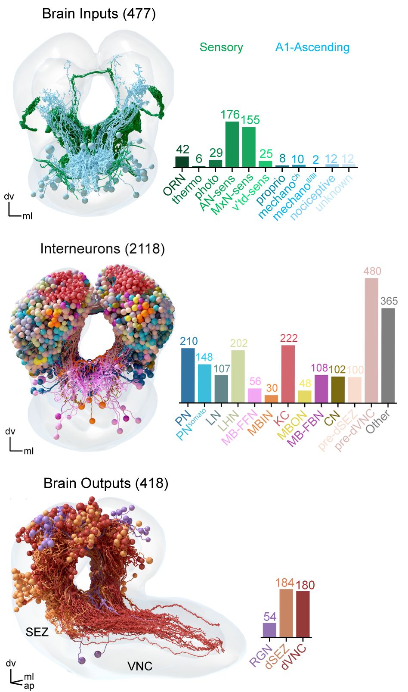

Group connection test#

Detect differences in group connection probabilities#

5 group-to-group connections are significantly different (after multiple comparisons correction)
Overall test (comparing all blocks):
p-value \(<10^{-7}\)
Should we be surprised?#
Already saw that even the overall densities were different
For all significant comparisons, probabilities on the right hemisphere were higher
Maybe the right is just a “scaled up” version of the left?
\(H_0: \color{#66c2a5}B^{(L)} \color{black} = c \color{#fc8d62}B^{(R)}\)
where \(c\) is a density-adjusting constant, \(\frac{\color{#66c2a5} p^{(L)}}{\color{#fc8d62} p^{(R)}}\)

After adjusting for density, differences are in KCs#


Overall p-value: \(<10^{-2}\)
When we remove KCs…#

Density test: \(p <10^{-26}\)
Group connection test: \(p <10^{-2}\)
Density-adjusted group connection test: \(p \approx 0.51\)
To sum up…#
“This brain is bilaterally symmetric.” -Neuroscientists
Depends on what you mean…
With Kenyon cells#
Model |
\(H_0\) (vs. \(H_A \neq\)) |
p-value |
|---|---|---|
ER |
\(\color{#66c2a5} p^{(L)} \color{black} = \color{#fc8d62}p^{(R)}\) |
\({<}10^{-23}\) |
SBM |
\(\color{#66c2a5} B^{(L)} \color{black} = \color{#fc8d62} B^{(R)}\) |
\({<}10^{-7}\) |
daSBM |
\(\color{#66c2a5}B^{(L)} \color{black} = c \color{#fc8d62}B^{(R)}\) |
\({<}10^{-2}\) |
Without Kenyon cells#
Model |
\(H_0\) (vs. \(H_A \neq\)) |
p-value |
|---|---|---|
ER |
\(\color{#66c2a5} p^{(L)} \color{black} = \color{#fc8d62}p^{(R)}\) |
\({<}10^{-26}\) |
SBM |
\(\color{#66c2a5} B^{(L)} \color{black} = \color{#fc8d62} B^{(R)}\) |
\({<}10^{-2}\) |
daSBM |
\(\color{#66c2a5}B^{(L)} \color{black} = c \color{#fc8d62}B^{(R)}\) |
\(\approx 0.51\) |
Examining the effect of edge weights#

Highest edge weight networks show no asymmetry#

Outline#
Larval connectome dataset#
Connectome comparison via network hypothesis testing#
Pairing neurons across connectomes via graph matching#
Ongoing extensions/applications#
Bilaterally homologous neuron pairs#
We believe a matching exists!
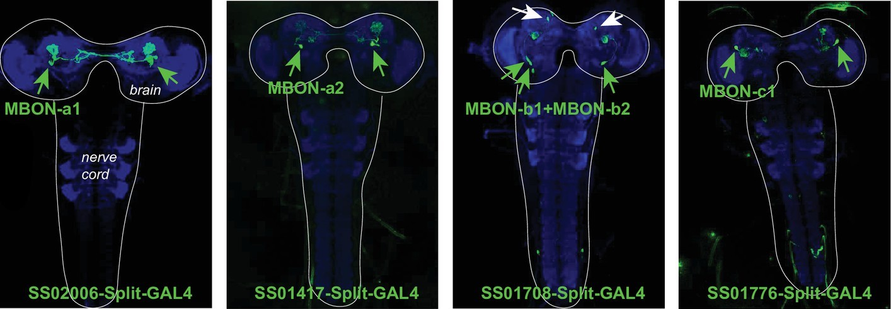
Can we use network structure to predict this pairing?#

Week 1: observe a network (\(A\)) of phone #s and the calls they make to each other
Week 2: all of the #s change! But a (noisy) version of that network still exists, with different labels… (\(B\))
How to map nodes of network \(A\) to those of network \(B\)?
What is graph matching?#
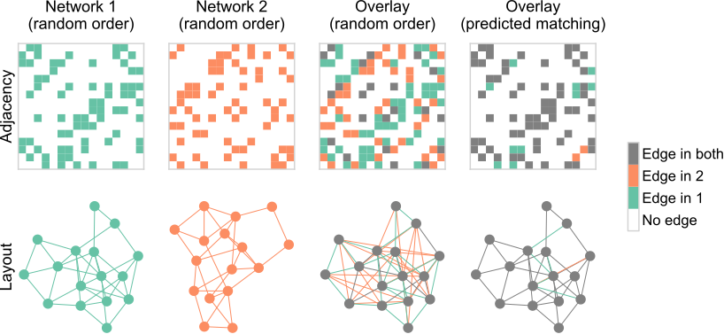
How do we measure network overlap?#
\(\min_{P \in \mathcal{P}} \underbrace{\|A - \overbrace{PBP^T}^{\text{reordered } B}\|_F^2}_{\text{distance between adj. mats.}}\)#
where \(\mathcal{P}\) is the set of permutation matrices
Measures the number of edge disagreements for unweighted networks,
Norm of edge disagreements for weighted networks
How do we do graph matching?#
Relax the problem to a continuos space
Convex hull of permutation matrices
Minimize a linear approximation of objective function (repeat)
Project back to the closest permutation matrix
Matching (by connectivity only) performs fairly well#

With “vanilla” graph matching: ~80% correct (according to expert annotator)
Many ways to try to improve on this…#
Edge types allow for “multilayer” graph matching
Partial knowledge of the matching (seeds)
Morphology (e.g. NBLAST)
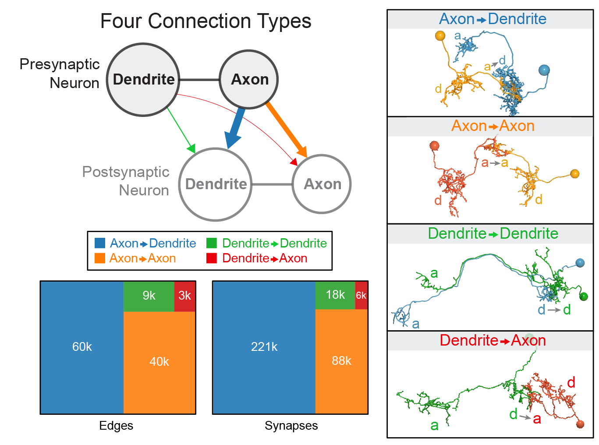
Summary of “edge types” based on neuron compartments
Thus far, we’ve not used the contralateral connections#
These are about 1/3 of the edges in the brain!#
From graph matching to bisected graph matching#
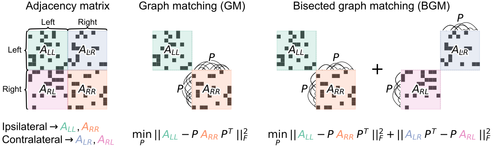
Contralateral connections are helpful!#
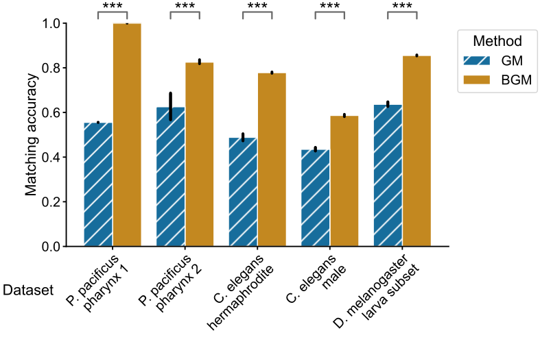
Performance improvement on the full brain#
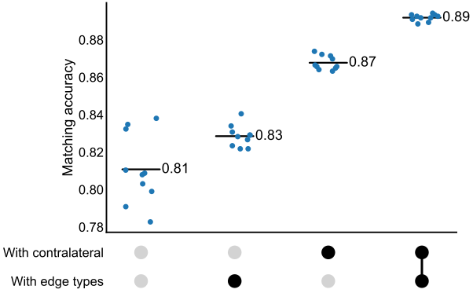
Outline#
Larval connectome dataset#
Connectome comparison via network hypothesis testing#
Pairing neurons across connectomes via graph matching#
Ongoing extensions/applications#
Pairs facilitate more powerful tests#
Generate an Erdos-Renyi network (\(A\))
Perturb a copy of it (\(B\)) (add edges)
Test for differences between \(A\) and \(B\)

Testing for “stereotypy” in edge structure#
Is matching stronger than expected under some model of independent networks?
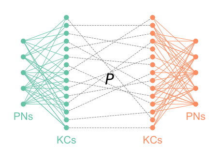
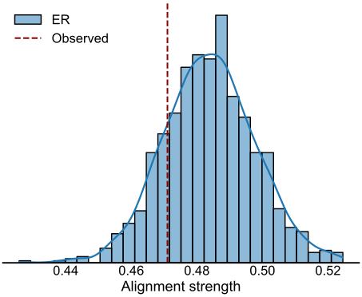
Neurons clustered by connectivity using recursive spectral clustering#
Where to stop splitting?
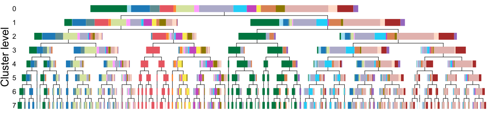

Using pairs and models to evaluate cell type groupings#
Clustering nodes corresponds with inferring groups in a stochastic block model (DCSBM)…
How well do these models generalize to the other side of the brain (let alone the next maggot)?
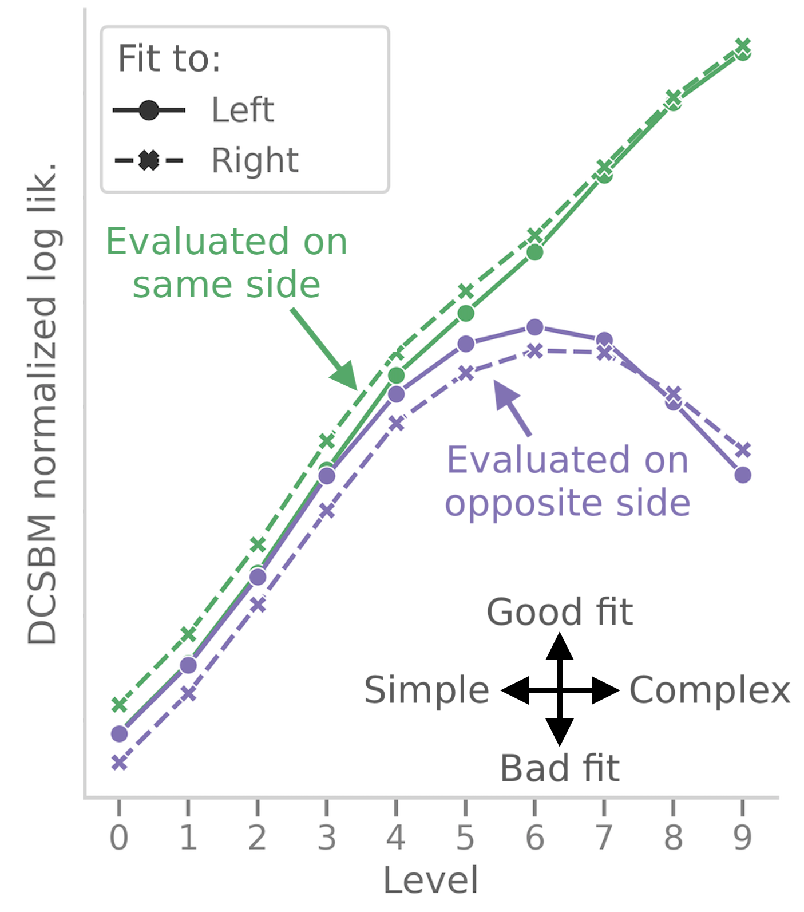
Summary#

Model-based network comparison enables testing (and refining) hypotheses about connectomes
We proposed a few tests, but just the beginning!

Graph matching can pair neurons across datasets
Helpful to adapt off-the-shelf algos. to use biological info (e.g contralaterals, edge types)
Aim to apply these (and other) tools to make inferences from connectome comparisons!
References#
Code#

github.com/neurodata/maggot_models
github.com/neurodata/bilateral-connectome
github.com/neurodata/bgm
Acknowledgements#
Team#
 Michael Winding
Michael Winding
 Mike Powell
Mike Powell
 Eric Bridgeford
Eric Bridgeford
Ali
Saad-Eldin
Marta Zlatic
Albert Cardona
Carey Priebe
Joshua Vogelstein
Tracers who contributed to larva connectome, Heather Patsolic, Youngser Park, NeuroData lab, Microsoft Research Figures from Scidraw + Noun Project (Alexander Bates, Xuan Ma, Gil Costa, Vivek Kumar, Leslie Coonrod)
Funding#
NSF Graduate Research Fellowship (B.D.P.), NSF CAREER Award (J.T.V.), NSF NeuroNex Award (J.T.V and C.E.P.), NIH BRAIN Initiative (J.T.V.)
Questions?#
Slides:#
tinyurl.com/princeton-bilarva#
Benjamin D. Pedigo#
bpedigo@jhu.edu
@bdpedigo (Github)
@bpedigod (Twitter)
bdpedigo.github.io